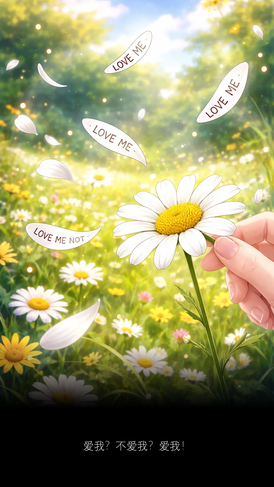
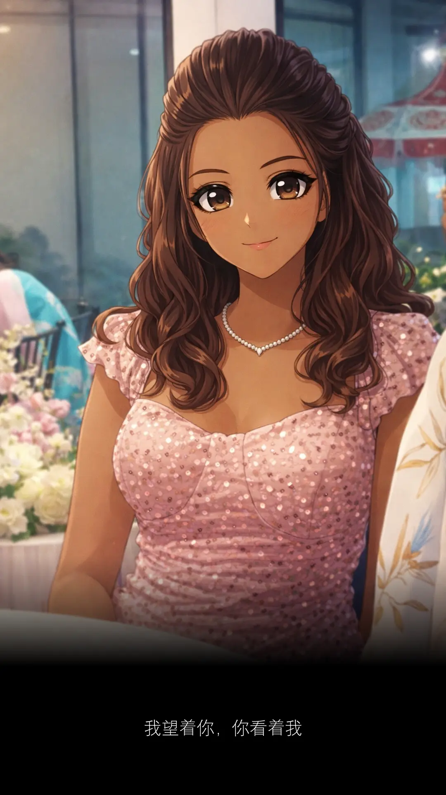
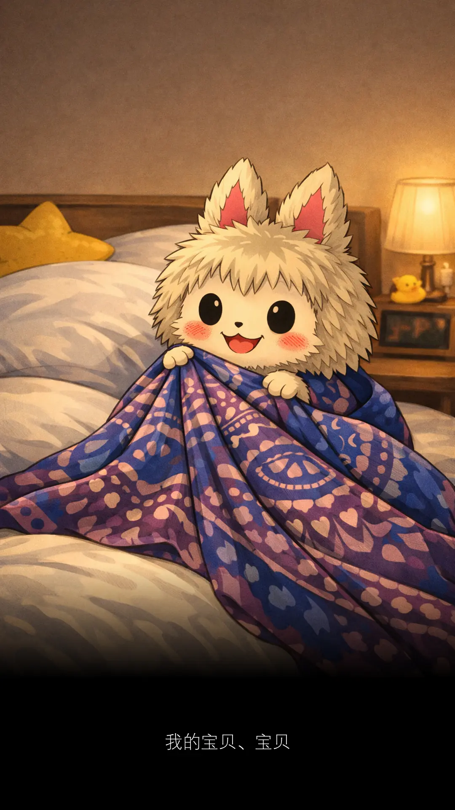

我太乐观了。
以为十天内可以痊愈。
现在第三个礼拜了。
时间证明我错了。
今年是马年。
塞翁失马，焉知非福。
所以今年只要一倒霉，下一秒就会赚回。
下一秒赚回，后一秒又会很惨。
后一秒很惨，过后就会很幸福。
就这样幸福下去，好么？
因为到时，时间已经来到羊年。
马儿交班了，吃草去了，自由了。
去寻找属于它的下一片天空。
我们十二年后再见。
这一年的 planning 大致是这样。
一进入马年就咳个不停，中间陆续跌宕起伏。
但是收尾的时候，一定会像马尾妹那样美美的厚。
悬崖勒马，回头是岸。
凡事留一线，日后好相见。
还有几个月才到羊年呢？
让我先数个绵羊，一只、两只、三只 ...
咳咳咳 ...
该死的，刚才数到第几只了？
没错是草泥马的七一八一。
什么？大声点，重复一遍。
你不会不知道，羊也是吃草的对吧？
还可以拿来煮羊肉咖喱，再不就是羊肉烧烤。
种种料理，就是要你 Hey you, Mr Q, 一起 barbecue.
说得没错，这就是乐观与悲观的差别。
我的火星朋友告诉我：
I would encourage everyone to be optimistic and excited about the future.
And generally, I think for quality of life, it is actually better to err ...
on the side of being an optimist and wrong ...
rather than a pessimist and right.
我想，我英文真的不好，还以为 err 是呃 ... 是一种犹豫。
生活已经那么苦，做人还要那么悲观么？
怎么说呢？Err ... 这次的呃是犹豫。
所以直接被 double kill 干掉。
从此，Err ... or 404: Page not found.
看你下次还敢呃呃声么？
打开油管，我只想听歌。
我没有你想象中那么坚强，我只是擅长用微笑去伪装。
春天花会开，风吹落满地。
蹲下身子，单膝跪地，缓缓伸出手拾取一朵雏菊。
那不是脚软，也不是求婚，而是一种仪式感。
扬眉吐气？羊没吐气？扬眉吐气！
花瓣不会说谎。
道理都懂，只是真正懂的时候，已经不再是二十岁。
D4
That is how I met your mother.
We live and die in the shadows, for those we hold close, and for those we never meet.
两年后，我不再是 INFJ-A

如果有一天我结婚了，但对方不是华人。
会有那么一天么？我从来就没想过。
但我知道表哥的女儿最近结婚了，她嫁给一个印度人。
这个我倒没想到。
世上没有绝对，尤其感情这回事。
是你的逃也逃不掉。
不是你的，从天上掉下来的仙女，你也得不到。
人与人之间，存在一种微妙感觉。
配合时间的酝酿，它让我们学会拥抱这世界。
让我们知道，这世界不只是一种颜色。
谁说不能黑白配？世界上没有什么事，能够如此的绝对。
白衬衫配黑裤子，我觉得很好看。
你要相信，相信我们会像童话故事里，幸福和快乐是结局。
这样的结局，不只属于光良，是属于还相信爱情的每一位。
你相信爱情么？
嘘，不必告诉我。讲出来会不灵，自己知道就好。
现在是春天，你看你，又再发春天的梦。
春天的梦，总让人动容。
这是出席一场婚礼后的有感而发。
那是一场印度人的婚礼。
我好久没参加印度人的婚礼了。
小时候，常常有这机会。
长大以后，才明白，有些机会，只留在小时候。
小时候的自己，又怎么懂得要珍惜？
如果早就懂得珍惜，那不叫小时候，那已是百年以后。
本以为这场婚礼会在印度庙，用香蕉叶赤手吃咖喱饭。
我好想念那个味道。
但是没有，他们走的是摩登路线。
好像华人，甚至比华人更华人。
因为他们还邀请了舞狮表演！
新年我都没看过舞狮。
这场婚礼，舞狮就在眼前。
还摆了个春联，祝贺新郎新娘百年好合、永浴爱河。
春宵一刻值千金，花有清香月有阴。
今晚话不多说，待婚礼结束后，直接来个鸳鸯浴。
让你欲仙欲死，余生的幸福全靠你了。
不久，我们座位，来了一位印度妹。
是新娘最小的妹妹。
这印度妹，小时候住在我们 kampung 家对面。
那时候她常跑来我们家，透过玻璃窗口跟我爸说印度话。
十多年前，他们举家搬去蒲种。
我对她的样子记忆，一直停留在坏蛋小妹妹的模样。
今天她姐姐结婚。
她还记得邀请我们，叫我们一定要赴约。
十多年没见过她了。
女大十八变，变得好漂亮。
她再也不是小妹妹，而是一个亭亭玉立的女人。
印象中，中学根本没遇见她，才知道她小我六岁。
我离开中学，她才进 form one.
目前单身，还没结婚，不想结婚。
她说她爱钱，男朋友不重要。
问她为什么不结婚？
她用印度话跟我爸说她要嫁给华人，指名道姓要嫁给我。
平时我和爸爸都没什么话聊，她竟在我爸妈面前撩我。
她与我们的邻居关系显然不会差。
甚至可以说是肝胆相照。
什么香皂？肝胆相照！
讲了你也不知道，我只是想拍个照。
来，多么难得大家聚在一起，笑一个吧！
功成名就不是目的。
让自己快乐快乐，这才叫做意义。
我负责拍照，你负责微笑。咔嚓！
我爸展颜欢笑。
我妈笑得合不拢嘴。
印度妹一笑倾城。
我无言以对、沉默是金。
她说她喜欢钱。
我没钱，金子就很多。
大概在一点五亿到两个亿之间。
她让我想起一个人。
我以为那只是虚构的角色。
我终于明白古龙笔下的苏樱。
在《绝代双骄》最后嫁给小鱼儿的那个女主角。
现实版中的她是谁了？
她就是我眼前的这个印度妹。
她们的性格如此相似。
原来，真有此人。
可惜，我不是小鱼儿。
看见蟑螂我不怕不怕啦，但是跑步没有蟑螂 ...
凡事都有期限，不要太迟，不要相信一切有下一次。
如果你要记得，那就要定时去接触它，这样它一辈子都跟随着你。
C2
九十九，它还是你的舞台秀。

你没有盖被的么？
没有。
你没有盖被，我拿被给你盖。
我都不想盖被，你还拿被给我盖？
不用紧，下次我拿被给你盖。
我睡觉没有盖被的。
你的被去了哪里？
我以前的被是 sarong 布来的，木了，丢了很久。
这样你没有被，家里还有一个新的 sarong 布我带给你。
Sarong 布要来做么？Labubu 有么？现在流行 Labubu.
下次我带一个被给你。
不要不要。我现在都没有盖被了。
家里有很多被，带一个给你。
盖被很多工，不要。
下次回家，我找一个被给你。
今天出了一整天，还在讲这个，不累么？
现在十点了么？
九点三个字。
九点三个字还早，十点就要去睡了。
差不多了，快点去睡。
所以，那个被 ...
又来？
为什么讲来讲去不会累？
因为你是我的宝贝。
当有一天，你找到了你的宝贝。
属于自己的宝贝，你自然就会明白。
当下再累、再疲倦，都变得无所谓。
只要能看到对方，眼神就会发光。
直到，进入梦乡。
是的，我们。
精神 D，临时演员都係演员嚟 ～
离开我 离开我
当太阳出现，它就会消失。
因为眼前出现一只 Fresh & White 北极熊。
我想写的就是这么一个故事。
Long does matter.
A4
再见有很多方式，谁又会知道你和我是哪一种方式？
我看着那位还在吃着星洲米粉的同事，再望向手机屏幕，再把眼神放回她身上，怎么越看越像？
嘿，你生日快到了。二五女，生日快乐。